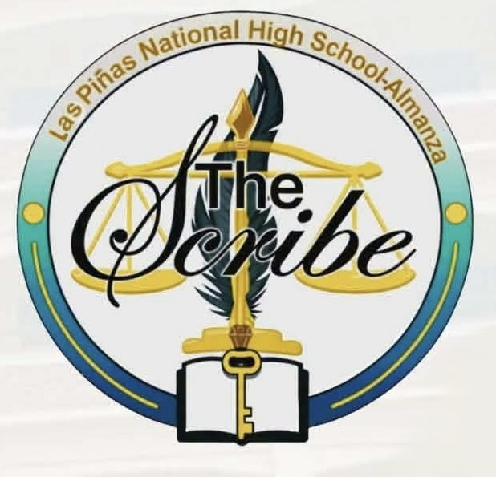

THE SCRIBE • STUDENT ORGANIZATION
The Scribe
About The Scribe

The Scribe is a club that shows us the importance of journalism.
It teaches us the importance of telling the truth to all the people
who read the news.
Recent Activities or Programs
- Competed in Different Schools
- Recruitment of Members
- Taught Members How to Improve Their Journalism Skills
The Scribe Officers
- Club Adviser
- Joy Ann Cabrera
- Executive Officers
- Club President: Sofhia Lomboy
- Club Vice President: Alessandra Fernandez
- Club Secretary: Koleen Castro
- Club Treasurer: Mark Astillero, Lyka Galliguez, Jullia Alarcon
- Club Public Information Officer: Samantha Carino
- Club Sergeant-at-Arms: Nigel Basanez, Sandrew McBride, Sean Angelo Olango
- Webmaster: Kaye Pituc